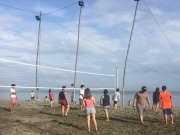

Looking for Attractions?
You've come to the right place!
Source: tripadvisor.com

Tondaligan Beach
#1 of 9 things to do in Dagupan
Enjoy a warm, cozy stay at the Tondaligan Beach, where the party never stops! Have fun in its fine, white sand, and dive into the waves to cool off after a hard day of work. Play with your friends and family and have the greatest vacation today!

Bonuan Blue Beach
#2 of 9 things to do in Dagupan
Truly deserving of being part of Dagupan's top 10 tourist destinations, the Bonuan Blue Beach is a wonder to see. With rich blue waters that stretch into the horizon, it's the perfect place to calm down and relax. Listen to the waves and enjoy.

Tondaligan People's Park
#3 of 9 things to do in Dagupan
Want to enjoy Dagupan's rich culture? Come to Tondaligan People's Park and partake in the local's daily festivities. Interact with the locals here, and play the games with them! The facilities are clean, and the air is as clean as can be.
Dagupan City Museum
#4 of 9 things to do in Dagupan
Learn to appreciate culture by going to the Dagupan City Museum, where the rich and deep culture of the Dagupan and Philippine is contained. Looked into the past and see how our ancestors lived, and how the past has shaped us today.
Pantal River
#5 of 9 things to do in Dagupan
Want to take a quick swim? Go to the Pantal River, where the locals live, fish, and swim in. With such clear and clean water, there's no way to get a better vacation that coming to this famous tourist spot. Come now, today! Hahah.
CSI
#6 of 9 things to do in Dagupan
Need to empty your wallet? Spend it all in CSI, one of Dagupan's greatest malls! With an amazing inventory from the supermarkets, to the private shops, as well as the fast food, there's everything here that you'd ever want to buy.
San Roque Dam
#7 of 9 things to do in Dagupan
Enjoy the clean and fresh air atop the San Roque Dam, where water from the nearby river is kept at bay by the giant dam that is blocking it. Well, I think that's how dams work, but this is a tourist site, so just visit anyways! It's free, and it's amazing.
Japanese-Philippine Friendship Garden
#8 of 9 things to do in Dagupan
Come here and pay respects to the Japanese-Philippine Friendship Garden. A site dedicated to the past Japanese colonization, and its eventual friendly turn, visit the Friendship Garden today and bask in the great atmosphere of history.
Stillwater Spa and Beauty Lounge
#9 of 9 things to do in Dagupan
Tired and in great need of rest? Visit Stillwater Spa today and feel reinvigorated by a professional massage given by the talented staff. A short time here can help with you with any ailments and bring heavenly relaxation to you today.
Baguio Festival
The Best Event in Dagupan
The Bangus Festival is an annual celebration in the city of Dagupan. It highlights the city’s rich milk fish aquaculture industry in the province of Pangasinan and in the country.
On the 3rd of May 2003, the populace of Dagupan City created an event as part of the Bangus Festival, the longest grilled “bangus” street party measuring 1,007.56 meters (3,305.6 feet). It broke Canchia’s, Peru 613 meters (2.011 feet long record set in November 1999. Hence, the city gained the Guinness World Record of the longest barbecued grill worldwide.Alongside, cooking experts participated in the cooking festival of the milk fish dishes such as sinigang, kilawen, daing and the local favorite pigar-pigar to delight the taste of the local crowd as well as tourists. Through this competition the “100 Ways to Cook Bangus” was reared, too.
To this day, a variety of restaurants serve the dishes in the area of Bonuan – Tondaligan district fronting the beach of Lingayen Gulf. The succulent taste of the milk fish in the city is due to the fact that it is raised in fish pen within the salty water of Lingayen Gulf. The milk fish (scientific name is Chano chanos) is of symmetrical streamlined appearance, and a sizeable forked caudal fin generally feeding on algae and invertebrates due to its absence of teeth. The usual size in length ready for the market is fourteen (14) inches. The Bangus Festival has been one of the most awaited celebrations in the province of Pangasinan as it is the melting pot of Northern Philippines.